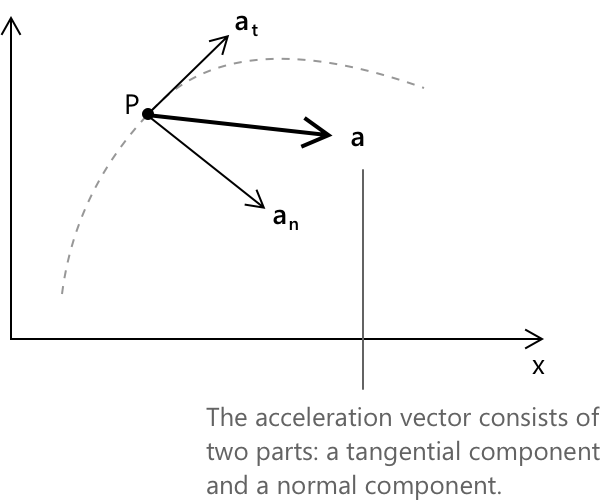

Рівномірно прискорений рух: прискорення
Вступ
Кінематика — це вивчення руху тіл, що описує їхнє положення, швидкість та прискорення з часом. Перш ніж перейти до детального пояснення цих явищ, необхідно ввести кілька ключових понять.
- Матеріальна точка — це ідеалізований об'єкт, розмір якого вважається нехтовно малим порівняно з відстанями, що беруть участь у його русі.
- Траєкторія — це шлях, який прокладає матеріальна точка під час руху в просторі.
- Рух називається прямолінійним, якщо його траєкторія лежить на прямій лінії.
Якщо матеріальна точка рухається по прямолінійній траєкторії зі сталим прискоренням, тобто швидкість зміни швидкості залишається рівномірною з часом, рух називається рівномірно прискореним прямолінійним рухом.
Прискорення
Розглянемо частинку, що рухається по прямолінійній траєкторії, де положення як функція часу не описується лінійним рівнянням. Нехай \( P_1 \) та \( P_2 \) позначають два положення матеріальної точки вздовж осі \( x \) у моменти часу \( t_1 \) та \( t_2 \) відповідно. Позначимо через \( \mathbf{v}_1 \) та \( \mathbf{v}_2 \) відповідні вектори швидкості, причому \( \mathbf{v}_1 \neq \mathbf{v}_2 \). Вектор прискорення визначається як наступна границя:
\[ \mathbf{a} = \lim_{\Delta t \to 0} \frac{\Delta \mathbf{v}}{\Delta t} = \frac{d\mathbf{v}}{dt} \]
Ми бачили, аналізуючи швидкість, що:
\[ \lim_{\Delta t \to 0} \frac{\Delta \mathbf{r}}{\Delta t} = \frac{d\mathbf{r}}{dt} = \mathbf{v} \]
Таким чином, маємо:
\[ \mathbf{a} = \frac{d}{dt}\left( \frac{d\mathbf{r}}{dt} \right) = \frac{d^2 \mathbf{r}}{dt^2} \]
Виходячи із загального виразу прискорення, можна ввести поняття тангенціального прискорення. Коли точка \( P \) рухається вздовж заданої траєкторії, вектор прискорення \( \mathbf{a} \) можна розкласти на дві складові:
- Тангенціальну до траєкторії.
- Нормальну до траєкторії (також називається доцентровим прискоренням, спрямованим до центра кривини траєкторії).
Тангенціальне прискорення, позначене \( \mathbf{a}_t \), відповідає зміні швидкості з часом. Воно визначається як:
\[ a_t = \frac{dv}{dt} = \mathbf{i} \, a_t \]
де \( v \) — модуль вектора швидкості \( \mathbf{v} \), а \(\mathbf{i}\) — напрямний та орієнтований вектор.

- Якщо модуль швидкості змінюється, існує тангенціальне прискорення \((a_t \neq 0)\).
- Якщо модуль швидкості залишається сталим, тангенціальне прискорення дорівнює нулю \((a_t = 0)\).
Рівномірно прискорений рух — це тип руху, при якому тангенціальне прискорення \( a_t \) є сталим у кожній точці та дорівнює середньому прискоренню на будь-якому часовому проміжку. Маємо:
\[\frac{v - v_0}{t-t_0} = a_t\]
Виходячи з цієї формули, розв'язуючи відносно \( v \) та припускаючи \( t_0 = 0 \), отримаємо:
\[ v = v_0 + a_t t \]
Таким чином, ми вивели вираз для швидкості на основі означення прискорення. Виходячи з виразу швидкості як функції часу, ми можемо вивести рівняння руху, інтегруючи за часом:
\[ y = \int_0^t v(t) \, dt = \int_0^t (v_0 + a_t t) \, dt \]
Обчислюючи інтеграл, отримаємо:
\[ y = v_0 t + \frac{1}{2} a_t t^2 \]
де \( y \) — переміщення матеріальної точки вздовж траєкторії як функція часу.